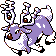

#148
Wyrdeer
NormalPsychic
IntimidateLowers the foe's Attack stat.
FriskChecks the foe's held item.
Sap SipperHidden abilityBoosts Attack when hit by Grass.
Base stats Total 525
HP103
Attack105
Defense72
Speed95
Sp. Atk75
Sp. Def75
Evolution
Evolves from Stantler — Level 31
Training & breeding
- Catch rate
- 45 / 255
- Base experience
- 163
- Wild held items
- None
- Gender ratio
- 50% male, 50% female
- Egg groups
- Field
- Hatch time
- 20 egg cycles (~5,120 steps)
- Growth rate
- Slow
Level-up moves
LevelMoveTypeCat.PowerAcc.